阴历(lunar)
回忆
- 上次我们研究了一个新的命令id
- 可以显示出用户id的一些信息
- 我们目前的用户id就是shiyanlou
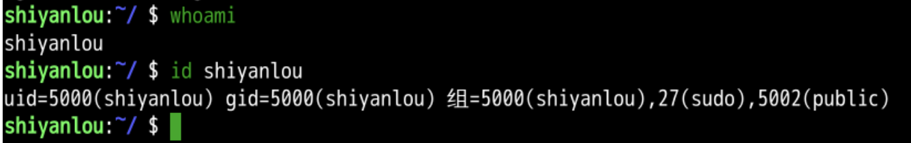
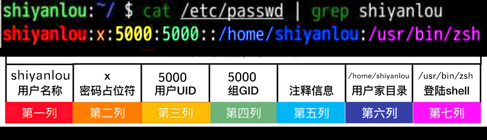
- 这些信息被:分割为7列
- 我可以自己创造一个用户id吗?
查询
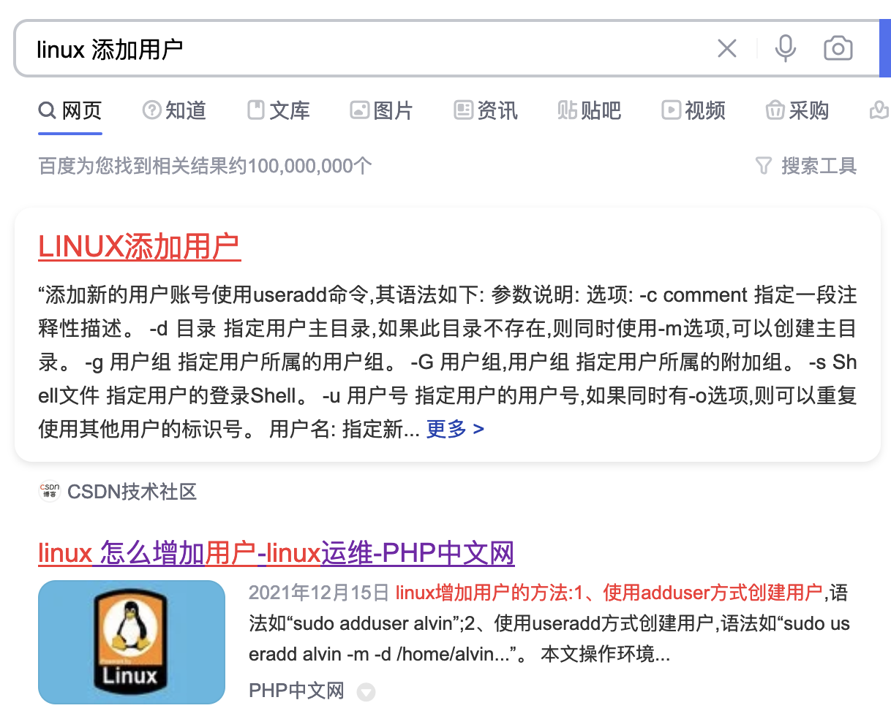
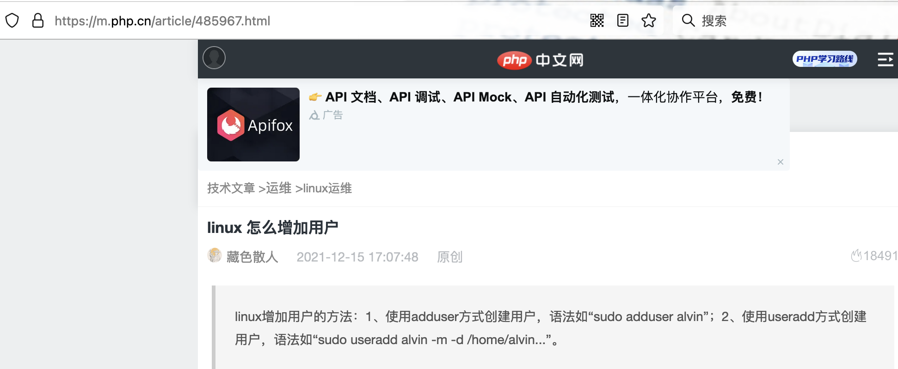
查看文件
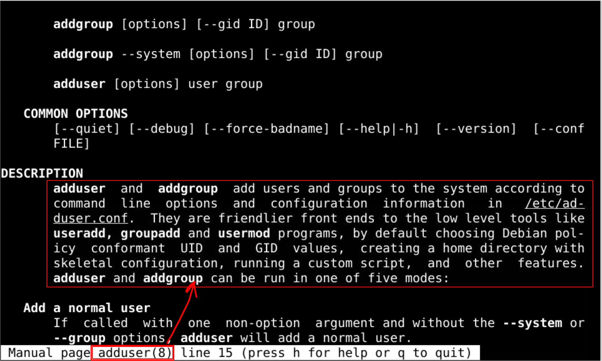
- adduser 和 addgroup是 友好的前端
- 他们调用的是useradd、groupadd、usermod
- useradd是什么文件呢？
useradd
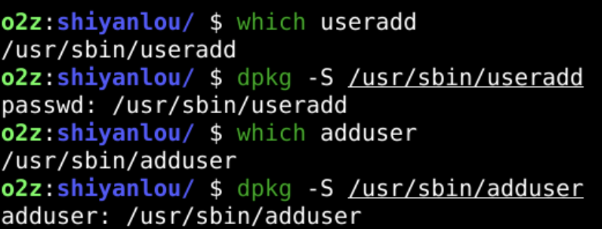
- adduser来自于 passwd 这个包
- 这个包里面都有什么呢？
先改源
sudo vi /etc/apt/sources.list
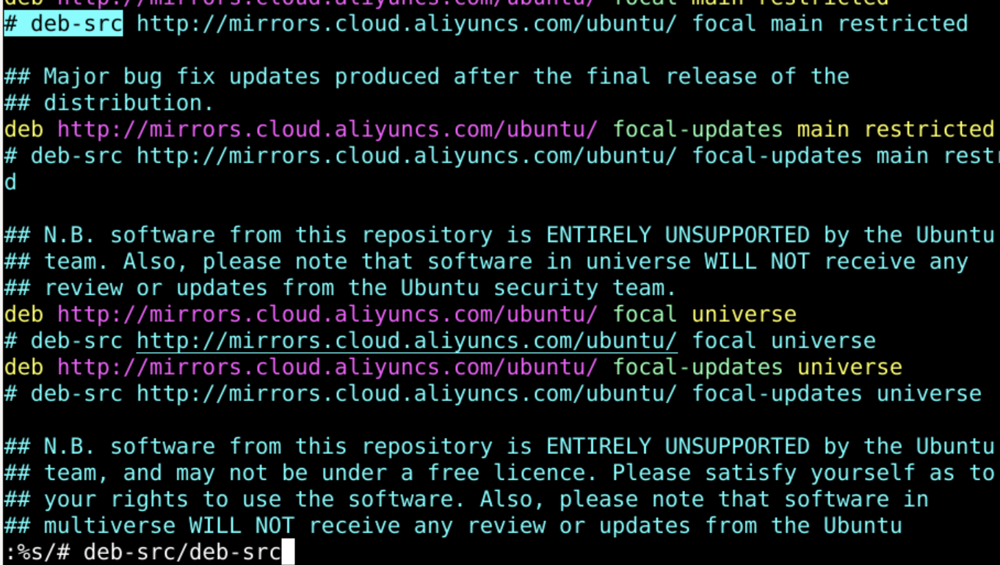
再更新源
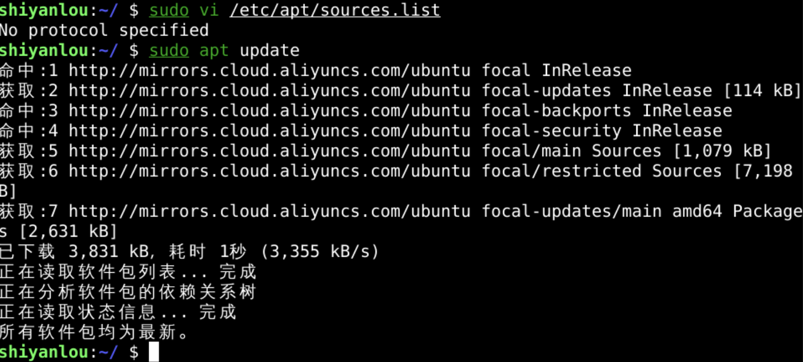
下载源代码
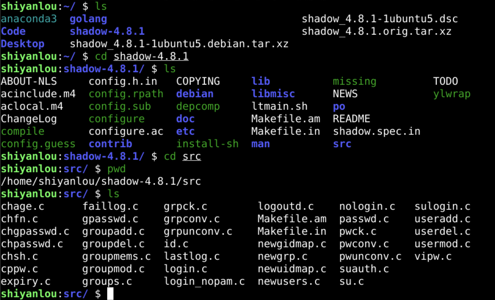
useradd.c
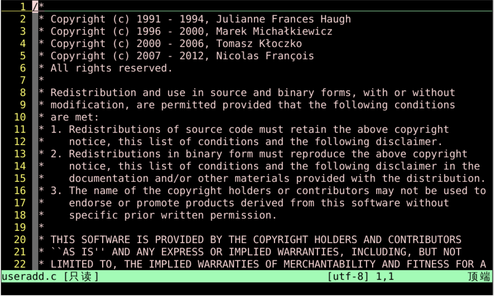
- 历经4代
- 2000+行的c代码
- 这就是开源的传承吗？
- useradd看起来是比较底层的
- 那么adduser应该更容易使用
- 不过adduser是怎么调用useradd的呢？
观察
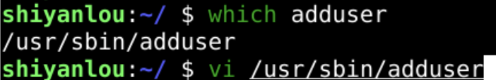
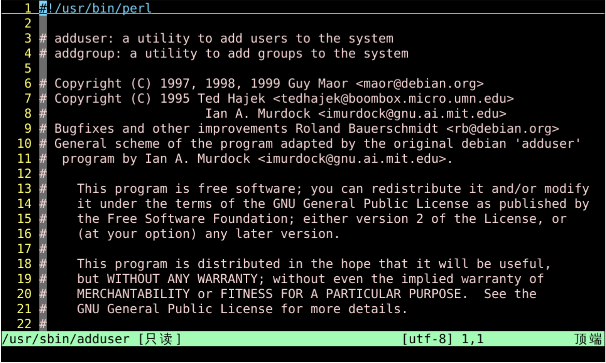
- 原来使用的是perl脚本调用的useradd
- 具体来说怎么用呢？
查看帮助
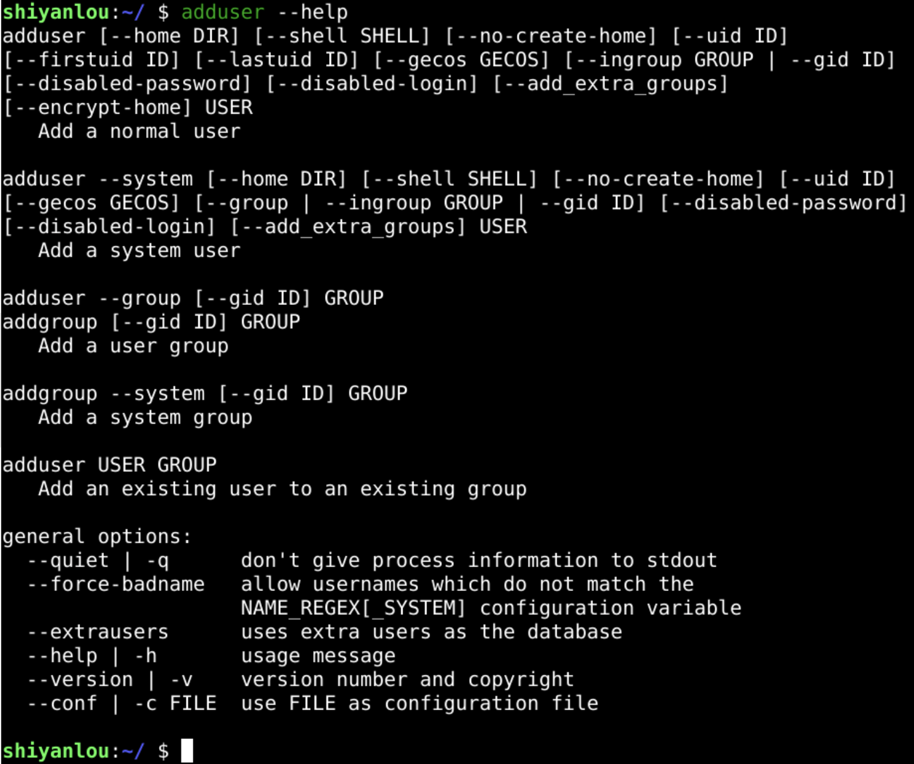
新建用户
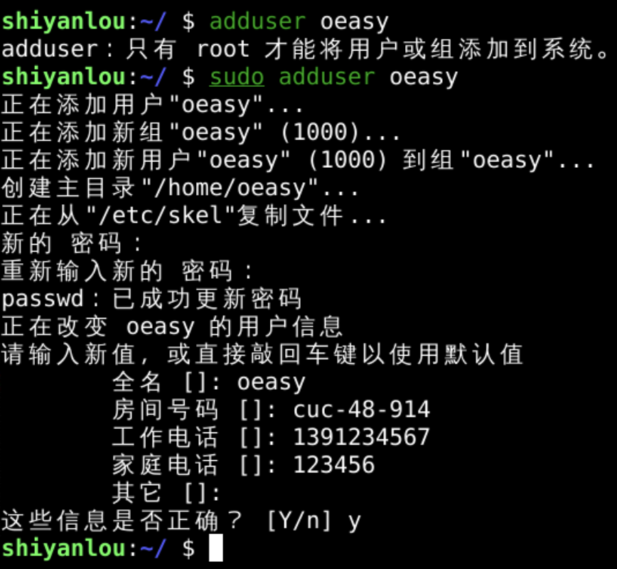
-
adduser
- 直接建立了用户
- 用户的主目录
- 还用交互的方式添加了信息
-
useradd
- 那可以用新用户登录吗？
登录
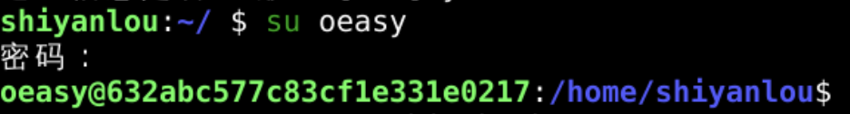
- 真的登录上去了！！!
- 可以查看oeasy的具体信息吗？
查看信息
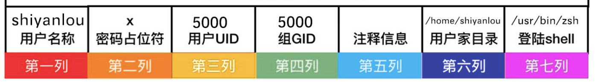
uid 范围
| 用户uid |
约定含义 |
| 0 超级管理员 |
最高权限 |
| 1~200 系统用户 |
用来运行系统自带的进程，默认已创建 |
| 201~999 系统用户 |
用来运行用户安装的程序，这类用户无需登录系统 |
| 1000以上 普通用户 |
正常可以登陆系统的用户，权限比较小，执行的任务有限 |
- 普通用户是从1000开始的
- 那么新建的这个oeasy就从第一个可用的uid(1000)开始
- 除非使用了--uid 参数
- 那我可以新建个系统用户么？
添加系统用户
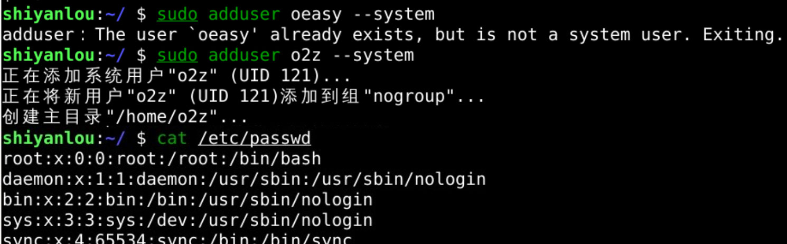
- 已经用过的用户名oeasy不能成为系统用户名
- 怎么办呢？
删除用户
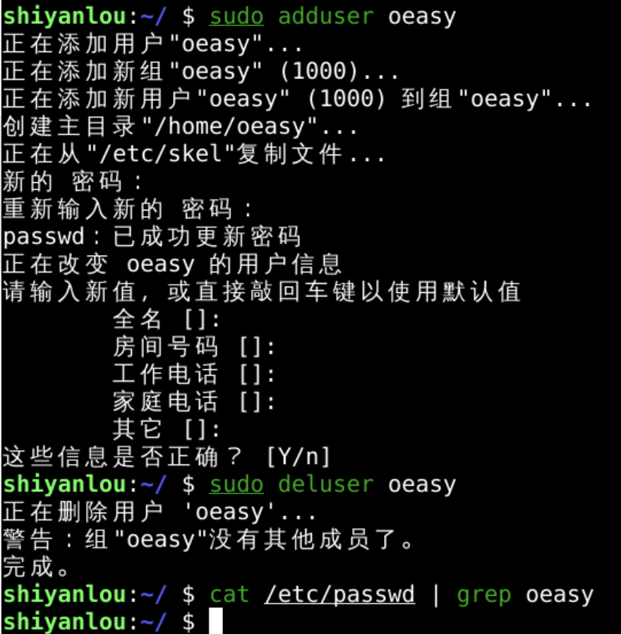
- 删除了用户就可以重新新建用户了
- 也可以用新用户名o2z可以成为系统用户名
- 从可以用的uid中找到最小的121给o2z作为id
- 系统用户的添加没有太多的交互
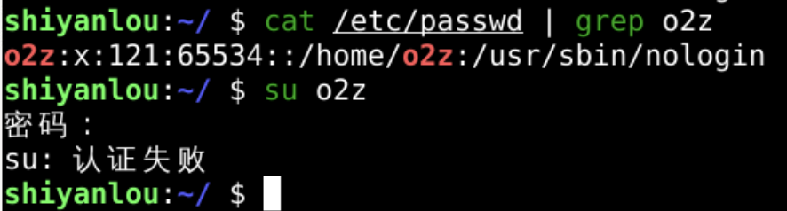
总结
- 有两个命令可以添加用户
- useradd
- adduser
- 但是新建的用户不能登录这个可怎么办?🤔
- 下次再说👋